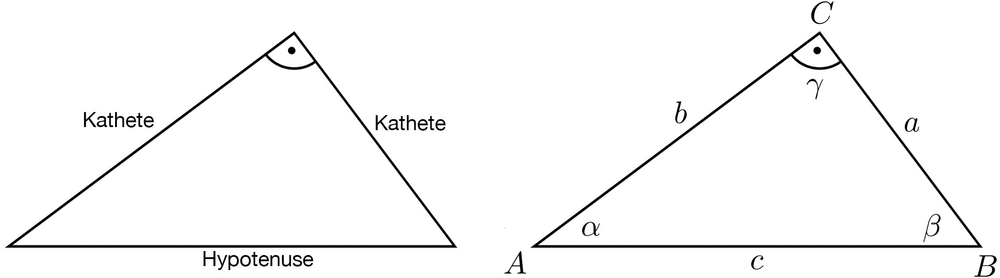
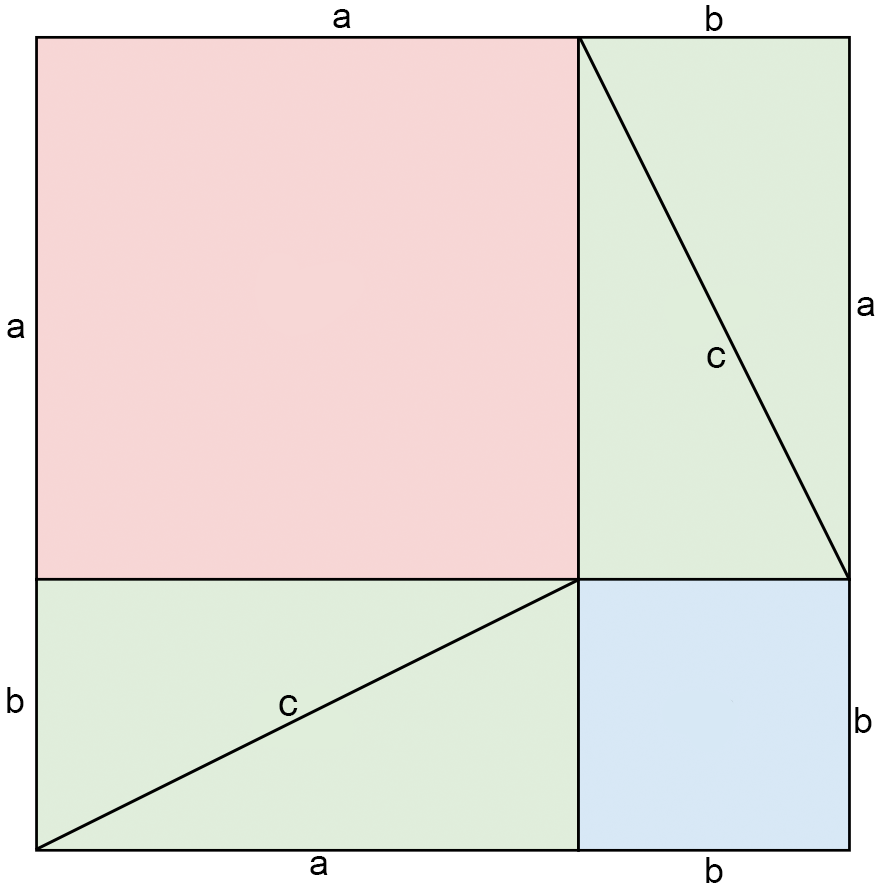
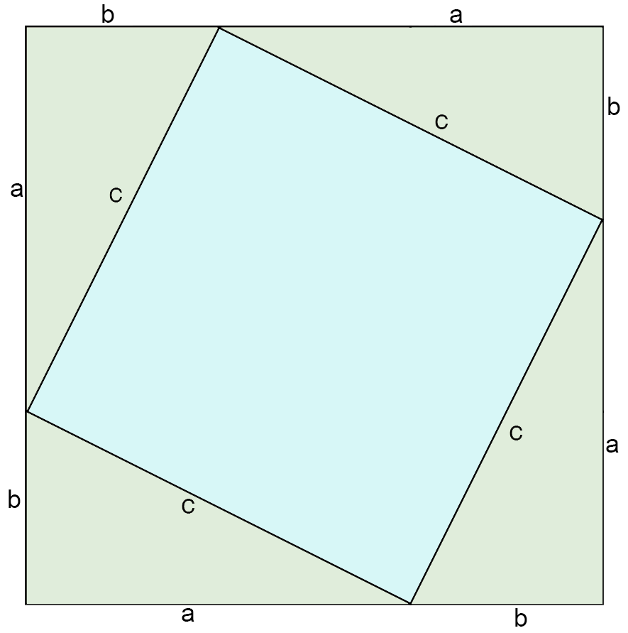
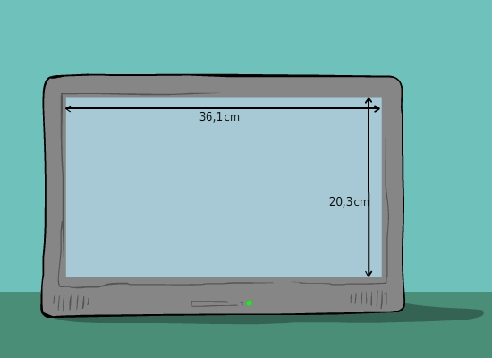
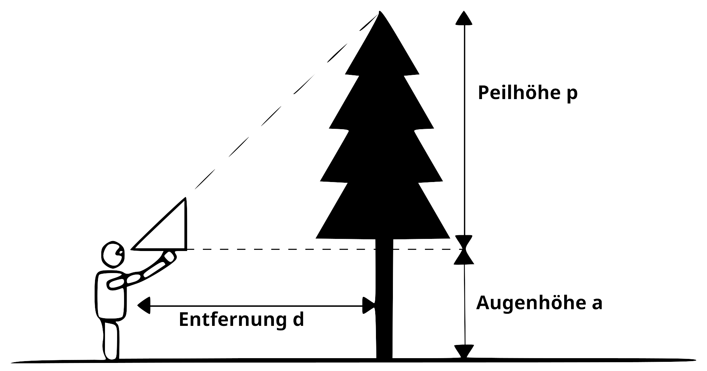

3 Pythagoras
3.1 Satz des Pythagoras
Wir betrachten in diesem Thema rechtwinklige Dreiecke und deren Gesetzmässigkeiten.
3.1.1 Beschriftung rechtwinkliges Dreieck
Bei einem rechtwinkligen Dreieck wird die Beschriftung üblicherweise so gewählt, dass der rechte Winkel bei der Ecke \(C\) liegt, also \(\gamma = 90\)°. Man nennt die dem rechten Winkel gegenüberliegende Seite (Seite \(c\)) die Hypotenuse. Die Hypotenuse ist die längste Seite in einem rechtwinkligen Dreieck. Die am rechten Winkel anliegenden Schenkel (Seiten \(a\) und \(b\)) nennt man die Katheten.
Repetition Dreiecksbeschriftung: - Die Ecken werden gegen dem Uhrzeigersinn im Dreieck mit Grossbuchstaben beschriftet (\(A\), \(B\), \(C\)). - Die gleichnamigen Seiten liegen gegebüber den entsprechenden Ecken und werden mit Kleinbuchstaben beschriftet (\(a\),\(b\),\(c\)). - Die Winkel werden mit griechischen Buchstaben beschriftet und liegen in den entsprechenden Ecken (\(A\) und \(\alpha\), \(B\) und \(\beta\), \(C\) und \(\gamma\))

3.1.2 Formulierung des Satzes
Vorbereitungsaufgabe:
- Zeichne ein spitzwinkliges oder stumpfwinkliges Dreieck und konstruiere über jeder Seite dieses Dreiecks ein Quadrat.
- Berechne die Flächeninhalte der Quadrate.
- Zeichne ein rechtwinkliges Dreieck und konstruiere über jeder Seite dieses Dreiecks ein Quadrat.
- Berechne die Flächeninhalte der Quadrate.
- Kannst du in einem der beiden Fälle etwas über den Zusammenhang der Flächen aussagen?
Was ihr hier beobachten konntet, ist die bekannte Aussage des Satzes von Pythagoras.
Wir können aus dem Satz des Pythagoras zwei unterschiedliche Aussagen lesen.
Ist das Dreieck rechtwinklig, so ist die Summe der Flächeninhalte der Kathetenquadrate gleich dem Flächeninhalt des Hypotenusequadrats \[ \gamma = 90^\circ \Rightarrow a^2 + b^2 = c^2 \]
Ist die Summe der Flächeninhalte der Kathetenquadrate gleich dem Flächeninhalt des Hypotenusequadrats, so ist das Dreieck rechtwinklig \[ a^2 + b^2 = c^2 \Rightarrow \gamma = 90^\circ \]
3.1.3 Die Umkehrung des Satzes
Drei natürliche Zahlen welche Seitenlängen eines rechtwinkligen Dreiecks sein können nennt man pythagoräisches Zahlentripel. Entsprechend besteht ein pythagoräisches Zahlentripel aus drei natürlichen Zahlen \(a\), \(b\), \(c\), für welche gilt: \(a^2 + b^2 = c^2\)
Das kleinste pythagoräische Zahlentripel sind die Zahlen \((3, 4, 5)\). Weitere Tripel sind z.B. \((5, 12, 13)\), \((8, 15, 17)\), \((15, 20, 25)\)
Überprüfe, ob diese Tripel diese Bedingungen tatsächlich erfüllen.
- Konstruiere ein Dreieck mit Seiten \(a, b, c\), für welches gilt: \(a^2 + b^2 = c^2\)
- Überprüfe, ob das Dreieck wirklich rechtwinklig ist.
3.1.4 Beweis des Satzes
Es gibt etliche verschiedene, einfache, schwierige und teilweise sehr ähnliche Beweise des Satzes von Pythagoras. Wir möchten uns nun einen etwas genauer anschauen.
Von den Polynomen (Binome) erinnern wir uns an folgende Konstruktion: 
Halbieren wir nun die beiden Rechtecke mit der Fläche \(ab\) und nennen die neue Strecke \(c\) 
Hier haben wir gesehen, dass die Fläche des grossen Quadrats \(a^2 + 2ab + b^2\) beträgt (1. Binomische Formel). platzieren wir nun die 4 Dreiecke jeweils in den Ecken, ergeben die Hypotenousen ein neues, kleineres, einbeschriebenes Quadrat.

Die Fläche des grossen Quadrats beträgt nun: \(c^2 + 4\cdot \frac{ab}{2} = c^2 + 2\cdot (ab)\)
Damit haben wir nun 2 Ausdrücke für die Fläche des grossen Quadrats. Das können wir gleichsetzen!
\(a^2 + 2ab + b^2 = c^2 + 2ab\)
Subtrahieren wir \(2ab\) von beiden Seiten erhalten wir:
\[ a^2 + b^2 = c^2 \]
Und diese Gleichung entspricht genau dem Satz des Pythagoras.
3.2 Anwendungen des Satzes von Pythagoras
Der Satz des Pythagoras hat sehr viele Anwendungen. In der Antike wurde er z.B. benutzt, um rechte Winkel zu konstruieren. Später konnte man ihn verwenden, um Wurzeln aus nicht Quadratzahlen zu bestimmen. Aber auch heute verwendet man ihn (und vor allem die Erweiterung zur Trigonometrie) noch bei der Landvermessung oder auch für simple Berechnungen z.B. der Länge einer Bildschirmdiagonalen, oder Abschätzung der Höhe von Bäumen.
3.2.1 Anwendungen früher bis heute
Schauen wir uns die Anwendungen mit Hilfe von Beispielen an.
Die alten ägyptischen Pyramiden sind geometrisch sehr exakt gebaut. So haben sie meist exakt quadratische Grundflächen. Dafür benötigt man neben gleich langen Seiten auch vier rechte Winkel. Eine Möglichkeit, rechte Winkel zu konstruieren, waren Zwölfknotenschnüre. Eine Zwölfknotenschnur ist ein geschlossenes Seil mit 12 Knoten, die jeweils identische Abstände voneinander haben.
Aufgaben:
- Überlege dir, wie mit einer Zwölfknotenschnur ein rechter Winkel entsteht.
- Gibt es noch eine andere Anzahl Knoten, mit der es möglich ist auf die gleiche Art einen rechten Winkel zu bestimmen?
Heute können wir Wurzeln mit dem Taschenrechner einfach bestimmen. Wenn wir z.B. den Wert von \(\sqrt{2}\) brauchen, gibt uns der Taschenrechner diesen auf mehrere Nachkommastellen gerundet. Wir möchten uns nun anschauen, wie man diesen Wert geometrisch konstruieren kann.
Um eine Strecke der Länge \(\sqrt{2}\) zu konstruieren, beginnt man mit einem rechtwinkligen Dreieck, bei dem beide Katheten jeweils Länge \(1\) haben \((a= b= 1)\).
- Skizziere ein solches Dreieck. Wo befindet sich die Strecke mit Länge \(\sqrt{2}\)? Begründe deine Antwort.
- Überlege dir, wie du mit der gleiche Methode eine Strecke der Länge \(\sqrt{5}\) konstruieren kannst.
- Löse Aufgaben 23 und 24 im Buch S. 76.
Üblicherweise wird bei einem Bildschirm nur die Länge der Diagonalen in Zoll angegeben \((1^{"}=2.54cm)\). Wirklich vorstellen können wir uns unter dieser Angabe jedoch wenig. Wir möchten nun für ein Beispiel die Bildschirmdiagonale berechnen.
- Betrachte den unternstehenden Bildschirm mit angegebener Länge und Breite. Wie viel Zoll ist die Bildschirmdiagonale?

- Bei Bildschirmen ist es heutzutage üblich ein Seitenverhältnis von 16:9 zu verwenden. Das heisst die längere Seite ist \(\frac{16}{9}\) der kürzeren Seite. Berechne die Seitenlängen eines Bildschirms mit einer Bildschirmdiagonalen von \(55\) Zoll.
Aufgabe 2 \[ \frac{16}{9} \rightarrow \frac{16x}{9x} \]
Breite: \(16x\), Höhe: \(9x\)
\(55^{"}\cdot 2.54\frac{cm}{"} = 139.7cm\)
\(a^2 + b^2 = c^2 \rightarrow \sqrt{(16x)^2 + (9x)^2} = 139.7cm\)
\(\sqrt{(16x)^2 + (9x)^2} = 139.7cm\)
\(\sqrt{256x^2 + 81x^2} = 139.7cm\)
\(\sqrt{337}x = 139.7cm\)
\(x=\frac{139.7cm}{\sqrt{337}} \approx 7.61\)
Breite: \(16\cdot 7.61cm = 121.76cm\)
Höhe \(9\cdot 7.61cm = 68.49cm\)
Kontrolle: \(\sqrt{121.76^2 + 68.49^2} = 139.7\)
Förster können mit einem rechtwinkligen Dreieck relativ schnell und einfach die Höhe eines Baums abschätzen. Der Förster hält dazu ein Gleichschenkliges Dreieck vor sein Auge und platziert sich so weit weg vom Baum, bis er über die Spitze des Dreiecks hinweg nur die oberste Spitze des Baumes sieht.

Quelle: https://de.wikipedia.org/w/index.php?curid=4202544
- Wie hoch ist der Baum, wenn der Förster \(12m\) entfernt vom Baum steht und der Förster selbst eine Grösse von 1.90m hat?
- Wie gross ist die Distanz vom Förster zur Baumspitze?
3.3 Weitere Anwendungsaufgaben
Eine Leiter soll zu einem Punkt \(14m\) über dem Boden hoch gehen. Wie lang muss die Leiter mindestens sein, wenn ihr Fuss \(4m\) von der (senkrechten) Wand entfernt steht?
Eine Doppelleiter ist \(3.5m\) lang. Sie soll \(3m\) hoch reichen. Wie weit muss man die Füsse auseinander stellen?
Ein Gleitschirmpilot steht auf dem \(2362m\) hohen Niesen bei Spiez und blickt ins Tal. Die auf der Karte im Massstab \(1:25000\) genau \(18cm\) entfernte Landestelle liegt auf einer Höhe von \(641m\) über Meer. Welche Strecke legt der Pilot mindestens zurück, wenn er in einer perfekten Gerade zum Landeplatz fliegt? (Runde auf ganze Zahlen)
Aufgabe 1
Die Leiter soll 14 m hoch reichen, der Fuß steht 4 m von der Wand entfernt.
Die Leiterlänge ist die Hypotenuse eines rechtwinkligen Dreiecks:
\[ L = \sqrt{14^2 + 4^2} = \sqrt{196 + 16} = \sqrt{212} \approx 14.56\ \text{m}. \]
Die Leiter muss mindestens 14.56 m lang sein.
Aufgabe 2
Die Doppelleiter ist 3.5 m lang und soll 3 m hoch reichen.
Jeder Leiterteil ist die Hypotenuse eines rechtwinkligen Dreiecks:
\[ x = \sqrt{3.5^2 - 3^2} = \sqrt{12.25 - 9} = \sqrt{3.25} \approx 1.80\ \text{m}. \]
Gesamtbreite:
\[ 2x \approx 3.61\ \text{m}. \]
Die Füße müssen ca. 3.61 m auseinander stehen.
Aufgabe 3
Höhenunterschied:
\[ \Delta h = 2362\,\text{m} - 641\,\text{m} = 1721\,\text{m}. \]
Horizontale Strecke (Maßstab 1 : 25000):
\[ 18\text{ cm} \cdot 25000 = 450000\text{ cm} = 4500\text{ m}. \]
Flugstrecke:
\[ s = \sqrt{4500^2 + 1721^2} \approx 4818\text{ m}. \]
Der Pilot fliegt mindestens 4818 m.